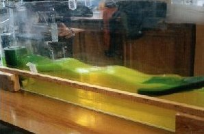

Avec mes deux accolytes, nous avons décidé de faire un peu de bricolage et de réaliser un petit bassin en plexiglass pour bien rigoler.
D'ailleurs j'ai envie de donner un petit conseil : quand vous remplissez de 50 litres d'eau un aquarium découpé avec un ouvre-boite et collé à la super glue, il faut mieux se mettre dans la baignoire que dans sa chambre.C'est plus prudent en cas de craquage total.
Cet aquarium avait trois buts :
Ces objectifs ont été à peu près atteints en considérant les faibles moyens de mesure dont nous disposions (un chrono et un double-décimètre).
Ici on peu voir le principe de l'agitateur : un moteur CC et une plaque en plexi qui oscille dans le plan vertical.